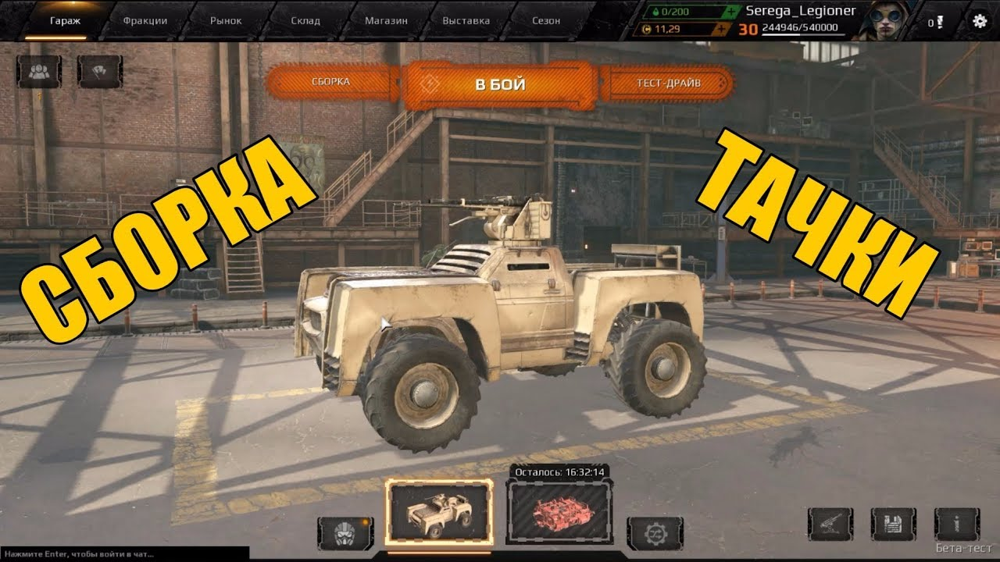
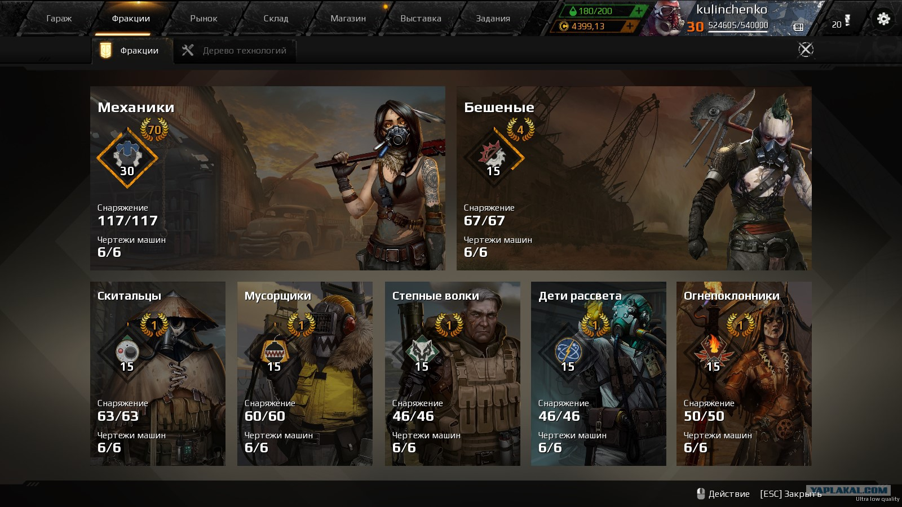
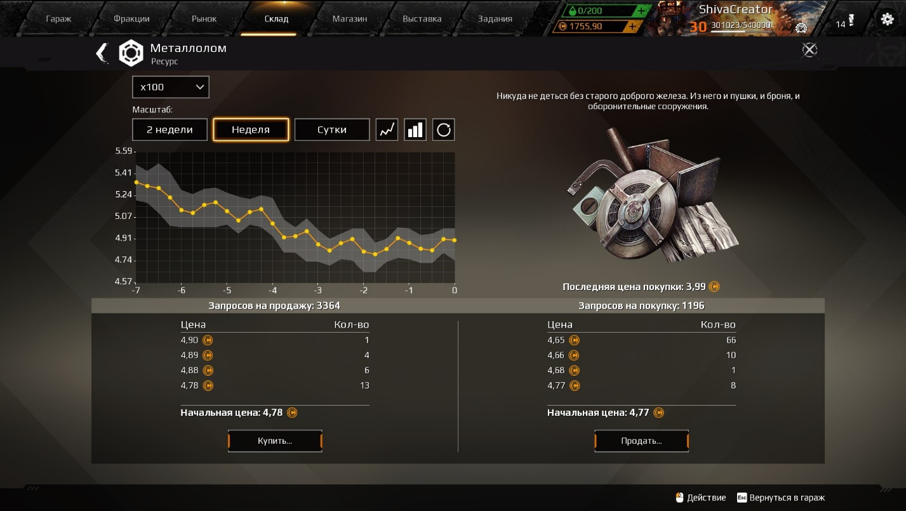
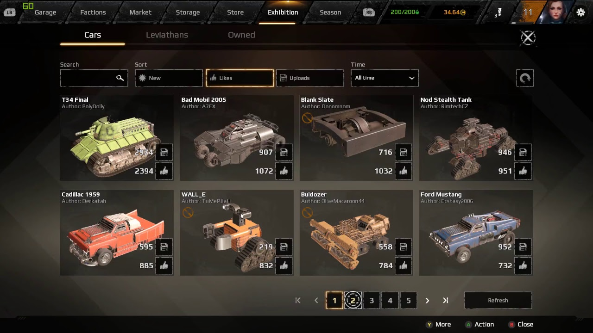
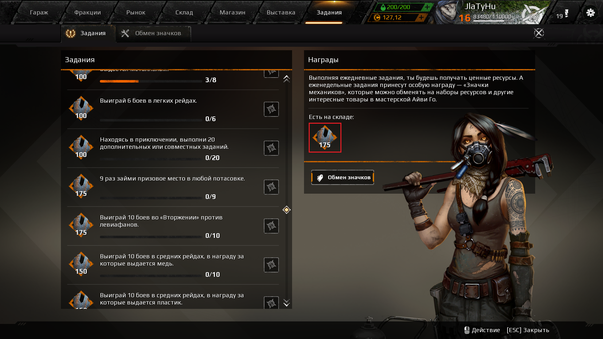
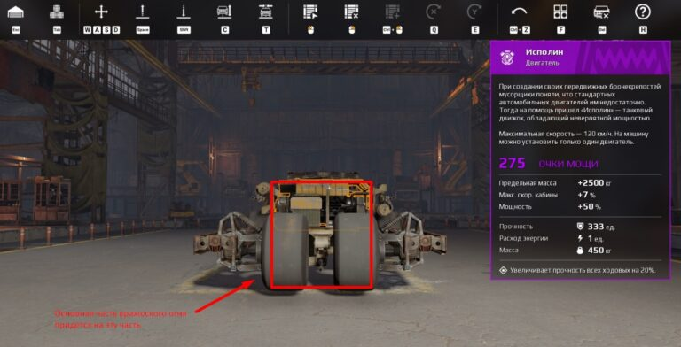
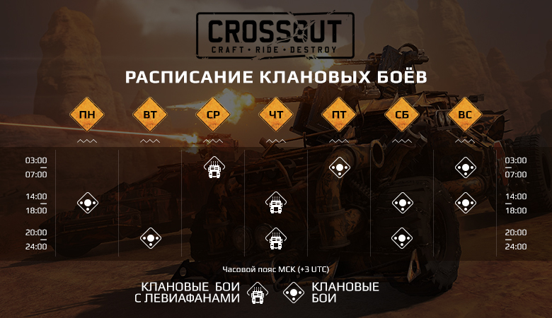
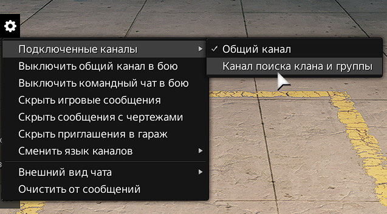
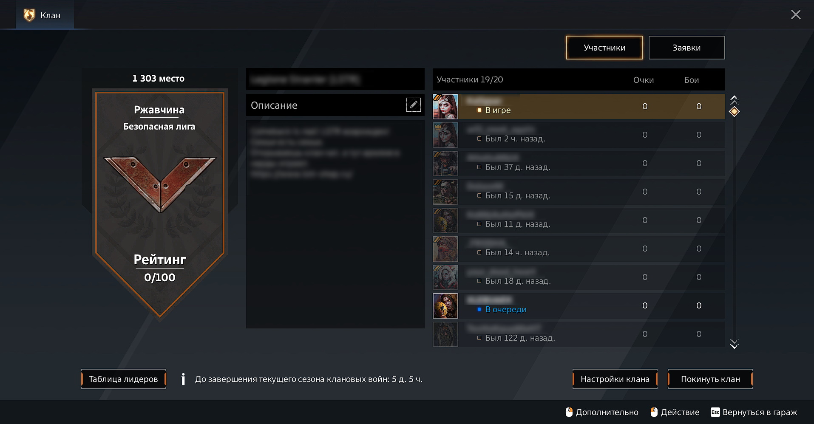

Глава 1: Основы игры
Добро пожаловать в Crossout
Crossout - это постапокалиптическая MMO-игра, где вы создаете уникальные боевые машины из десятков деталей и участвуете в динамичных PvP-сражениях.
вкладка гараж
это дом игрока, где он может создать свой собственный шедевральный автомобиль
вкладка Фракции
Игрок начинает игру во фракции «Механики», а после достижения 10-го уровня репутации может присоединиться к одной из шести основных фракций. Переключение между фракциями возможно в любой момент. Чтобы вступить во фракцию, выживший должен заслужить доверие. В мире постапокалипсиса это можно сделать только в бою. Каждая фракция предоставляет несколько чертежей фракционных машин, а также открывает бонусы к различным частям транспортного средства, увеличение размера склада и так далее.
вкладка рынок
это не магазин игры, а площадка для торговли между игроками.Товары (детали и ресурсы) на рынке выставляют сами игроки и цену на них устанавливают сами игроки. Как вы знаете, игроки в проекте могут собрать бронемобиль мечты произвольной конструкции, используя для этого детали, которые можно получить в качестве награды за бои или создать самому, используя возможности Фракций.
вкладка выставка
место где есть уникальные машины, созданные самими игроками из доступных частей — от маневренных багги и парящих в небе бронелётов до тяжелых вездеходов на гусеничном ходу и боевых платформ на антигравитационной основе
вкладка задания
За выполнение первых игрок получает металлолом. За выполнение вторых — особый ресурс (значки Механиков), который можно обменять и получить уникальные предметы. Кроме того, в игре есть система «достижений», за которые игрок получает уникальные фоны и эмблемы баннеров — элементы персонализации профиля.
глава 2 крафтинг предметов
В Crossout игроки сами могут создать нужные предмет, на станке каждой фракции можно скрафтить: *Кабины *Колеса *Оружие *Аппаратуру *двигатели *охладители *радары *генераторы *ускорители *ящики с увеличенным боезапасом *модули невидимости То есть на станках можно создать предметы, которые позволят сделать вашу машину сильнее. Попробуем разобраться, что нужно сделать, для того, чтобы получить возможность крафтить предметы в Crossout.
Получение доступа к станкам в Crossout
Для того, чтобы получить доступ к станку нужно присоединиться к фракции и заработать необходимую репутацию. В начале игры можно сотрудничать лишь с Механиками, значит и детали можно будет создавать только на станке этой фракции. Достигнув 10-го уровня репутации с Механиками вы сможете присоединиться ко второй фракции и воспользоваться ее станком для создания нужных предметов. Получение репутации для крафта новых предметов Простого вступления во фракцию недостаточно для крафта предметов. Для того, чтобы создавать ценные комплектующие потребуется заработать определенную репутацию. *для крафта редких вещей - 1 уровень *для создания эпических предметов - 5 уровень *для легендарных - 9 уровень *для реликтовых - 20 уровень Заработанная репутация сохраняется навсегда. Так что вы сможете менять фракции и пользоваться их станками, зарабатывать репутацию заново не потребуется.
Аренда станка в Кроссаут
Для того, чтобы воспользоваться станком нужно взять его в аренду, то есть оплатить создание на нем 5, 10 или 15 предметов. Цена аренды составляет: *25 монет за создание 5 предметов *47,5 монет за создание 10 *67,5 монет за создание 15 Для аренды станка в главном меню игры выберите пункт фракции, затем производство. В верхней части экрана выберите количество деталей, которые вы собираетесь произвести, оплатите аренду станка. В аренду можно брать станок только той фракции, в которой вы состоите. Если вы смените фракцию, то не сможете пользоваться ее станком до тех пор, пока вновь не присоединитесь к ней.
Производство деталей в Crossout
Сбор ресурсов и деталей Для крафта предметов вам потребуются реагенты: *ресурсы *Металлолом *Медь *Прово *Электроника *детали *Колеса *Кабины *Двигатели *Орудия *Аппаратура Их количество, и качество зависит от редкости создаваемого оборудования, например для создания эпической пушки Палач 88 потребуется: *250 металлолома *750 проводов *150 меди *2 пушки Судья 76 мм *2 колеса двойных *2 кабины Дальнобой Для крафта редкого пулемета 6П5-4 Вектор потребуется меньше реагентов: *450 металлолома *50 меди *3 пулемета П-54М Аккорд *2 радиатора *2 малых колеса Посмотреть список требуемых реагентов можно в игре в разделе фракции - производство.
Создание предмета
Если вы собрали все необходимые реагенты и арендовали станок, то можно крафтить предмет, на его создание потребуется время. Работу можно ускорить и получить оборудование мгновенно, но за это придется заплатить.
Глава 3 рынок
глава 3 олсновы рынка
Узнайте о различных тактиках ведения боя, командной работе и использовании ландшафта в свою пользу.
Рынок
Рынок – место, где можно продавать ненужные детали и покупать необходимые. По системе продаж рынок можно условно разделить на два вида: гарантированный рынок и аукцион. После обновления 0.10.70 рынок доступен только при достижении 8-го уровня репутации с фракцией "Механики". На гарантированном рынке игроки могут продавать детали моментально, но скорость продажи сильно влияет на цену товара. Чтобы продать нужную деталь, достаточно просто кликнуть по ней правой кнопкой мыши и выбрать пункт «Продать». При этом цена продажи уже указана, и каких-либо дополнительных процедур эта операция не требует. Разобраться с аукционом несколько сложнее (хотя по факту ничего особо сложного всё же нет), но его освоение окупится игрокам уже с первых продаж, так как здесь начальные цены на товар выше, чем на гарантированном рынке, и, к тому же, их можно устанавливать самостоятельно.
После этого откроется окно продажи товара: По умолчанию цена на товар установлена согласно самой низкой цене покупки на такой же товар. Игрок может поставить цену выше, но в этом случае вероятность, что его товар купят, падает. Так же в этом окне указан потенциальный доход с учётом комиссии рынка и количество деталей, которые игрок хочет продать. Установили цену, выбрали количество. Теперь лот можно выставлять на торги: Теперь игрок может следить за своим лотом через подраздел «Мои лоты»: В любой момент игрок может снять лот с торгов, просто нажав по нему левой кнопкой мыши: Если товар купили, игроку приходит соответствующее уведомление, а лот сохраняется в Истории. Ну вот, собственно, и всё. Желаем удачных сделок! Оставайтесь с нами! До новых встреч!
Глава 4 сборка крафта
глава 4 сборка крафта
Говоря «крутая машина» игроки обычно подразумевают гармоничное сочетание внешней красоты, бронирования и убойной мощи. В этом небольшом гайде вы научитесь основным принципам инженерии Crossout, которые позволят вам создавать действительно классные крафты. Но сперва немного матчасти.
Этапы строительства
Нельзя просто так взять и начать лепить все в кучу. Иначе получится очередной уродливый гроб на колесах. Так не пойдет. Строительство машины делим на несколько этапов (далее поймете, почему): Костяк – рама, расположение основных модулей и оружия; Броня – укрепление слабых мест броней; Декор – украшение крафта. Начнем с основы нашей машины.
модули взрываються

Не секрет, что многие модули Crossout взрываются при уничтожении, нанося урон остальным ближайшим деталям. Если модуль взрывоопасный, об этом обязательно написано в его описании в игре. В пример можно привести топливные баки, генераторы, ящики с боеприпасами. Некоторые модули взрываются при уничтожении Если расположить такие модули в неудачном месте и близко друг к другу, то при уничтожении одного может возникнуть цепочка взрывов, которая уничтожит весь крафт И такие случаи далеко не редкость. Как понимаете, правильное расположение модулей – это, можно сказать, самая важная часть постройки вашего боевого автомобиля. Поэтому уделите следующему разделу статьи максимум внимания, чтобы не выхватывать ваншоты от первого встречного.
Рабочая сторона машины, оружие и базовые модули

Например, у одной из ракетных машин (которую я для себя торжественно окрестил «панголином»), «танкует» именно задняя часть, поскольку задача машины – дать ракетный залп прямо на ходу и сразу же сменить направление. Соответственно, в след всегда летит куча снарядов, и нужно держать удар. Ховер - боколет
Строим правильный костяк машины

Для тренировочного крафта предположим, что наша рабочая сторона – это перед. От этого и будем отталкиваться. Первым делом установим раму 6х1, максимально компактно прикрепим к ней основные взрывоопасные модули (топливные баки, генератор) и радио – место-то все равно остается, так почему бы и нет. Окружим рамой со всех сторон.

Вот эта штука должна находиться примерно под кабиной и ее нужно защитить со всех сторон, чтобы ваша машина не взорвалась в бою. Далее установим кабину и двигатель. Поскольку рабочая сторона у нас перед, то двигатель я поставлю перед кабиной, чтобы он служил дополнительной броней, когда сломают основную.

Теперь нужно понять, где у нас будет находиться оружие. Без оружия машина почти бесполезна, поэтому его тоже важно защитить. Я буду использовать самый простой и один из самых эффективных видов оружия – автопушки. Проще всего – выстроить их в ряд и прикрыть скосами мусорщиков, но я решил расположить автопушки вот таким странным способом. Возможно, это не очень удобно и не слишком эффективно, зато достаточно показательно. В конце концов, не важно, что у машины под капотом, а важно то, кто сидит за рулём ©. Странное расположение оружия
Уже на этом этапе можно выехать из гаража и попытаться застрелить собственную машину в лобовую проекцию с 15-20 метров. Она спокойно переживет первый обстрел до перегрева, сохраняя боеспособность, и будет взорвана только к середине второго. А мы ведь еще даже броню не навесили. Все дело в том, что теперь кабину защищают колеса, фронтальная пушка, да еще и двигатель, а орудия располагаются в разных местах, из-за чего их достаточно сложно уничтожить единовременно даже с небольшого расстояния. При этом завернутая рама в лобовой проекции защищает задние колеса от отстрела, что позволяет бронемашине дольше сохранять подвижность, а значит и боеспособность. С модулями разобрались. Теперь займемся бронированием.
Бронируем машину
Бронируем машину Поскольку наша рабочая сторона – это фронтальная часть, ее и будем защищать в первую очередь. И начнем мы, конечно, с центральной части лобовой проекции, куда, скорее всего, придется основная часть вражеского огня.

В центре у нас находятся колеса, пушка и движок, потому все это дело нужно грамотно прикрыть толстой броней, чтобы минимизировать ущерб. Первым делом я накрыл колеса паровозным отвалом Мусорщиков и установил большие скосы для защиты рамы. Если раму прострелят, то отвалятся и колеса, потому ее также важно защитить. Под автопушки подложил Малое Днище Багги, чтобы отвал не загораживал им обзор. Эта деталь простреливается насквозь, пропуская 90% урона.

Далее перед фронтальной (нижней) пушкой я установил простейший бронелист Мусорщиков, чтобы закрыть ее основание, оставив только дуло. Получилось вот так.

Колеса тоже можно было бы как-то защитить, но я не стал этого делать. Двигатель «Исполин» и без того повышает прочность ходовой, потому пока что этим и ограничимся. А вот боковые автопушки я усилил обычными скосами. Опять же для того, чтобы укрыть основание от вражеских попаданий.

Далее мы должны обязательно защитить взрывоопасные модули, которые буквально торчат из днища машины. Спереди они уже неплохо защищены. Для боков можно использовать продолговатые бамперы. Они устойчивы к ударному урону, потому «утюгам» будет сложнее пробить их своим шипованным носом.
Для задней части используtv бампер «Кенгурятище».

Итак, самая базовая броня готова. Рабочая сторона закрыта, взрывоопасные модули закрыты. Осталось навесить брони по бокам и сзади. Вот только на этом этапе можно включать свои креативные идеи. Но не забывайте, что это все еще этап брони
Глава 5: Продвинутые техники
Мастерство игры
Освойте продвинутые механики игры, включая специальные приёмы вождения и комбинации вооружения.
Время доступности Клановых Войн
Данное расписание носит информационный характер и может быть изменено. Мы рекомендуем обязательно проверять время старта нужной вам Потасовки, Клановых и Рейтинговых боев непосредственно в игре.
Создание собственного клана
Клан может создать любой игрок. Для того, чтобы зарегистрировать новый клан, вам необходимо иметь на своем игровом счету 200 металлолома. Если у вас уже есть указанная сумма - смело нажимайте «Создать клан»! Вы можете указать название, тег и описание клана. После того, как вы создадите свой клан, вы автоматически становитесь его лидером и вам становятся доступны все функции управления кланом.
Вступление в чужой клан
В клан вас могут только пригласить. Публикуйте свои заявки на вступление в специальном канале чата.
Управление кланом
Каждый клан имеет свои уникальные название, тег и описание. Максимальное количество человек в клане - 20. Помимо этого, у каждого клана есть свой отдельный чат, где его члены могут общаться между собой. У каждого клана есть лидер, который обозначается короной в списке участников. Лидер может быть только один; Лидер может менять название клана, его описание и настройки; Лидер может приглашать в клан и исключать из клана игроков; Лидер может покинуть клан только в том случае, если в клане никого, кроме него, не числится. При этом клан расформировывается; Если лидер клана не заходил в игру ни разу в течение месяца, лидерство передается следующему игроку, который находится в игре и имеет самое высокое звание; Для игры в Клановых боях наличие лидера в группе не является обязательным условием. Кроме того, лидер клана может назначать офицеров клана. Офицеры обозначаются двойной чертой в списке участников. Офицеров может быть больше одного; Офицер может менять описание клана и настройки клана; Офицер может приглашать в клан и исключать из клана игроков; Офицер может покинуть клан в любой момент; Для игры в Клановых боях наличие офицера в группе не является обязательным условием.
Клановые события
Клановые войны и Клановые противостояния — это особые режимы, в которых принимают участие только игроки кланов в формате боёв 4х4.
Ограничения
При выходе из клана на игрока накладывается штраф: он не может вступить в клан, будь то старый или новый, в течение трёх суток. Если игрок сыграл хотя бы один бой в течение сезона клановых войн (неделя с понедельника по воскресенье), то при вступлении в другой клан он не может принимать участие в клановых боях до окончания этого сезона.